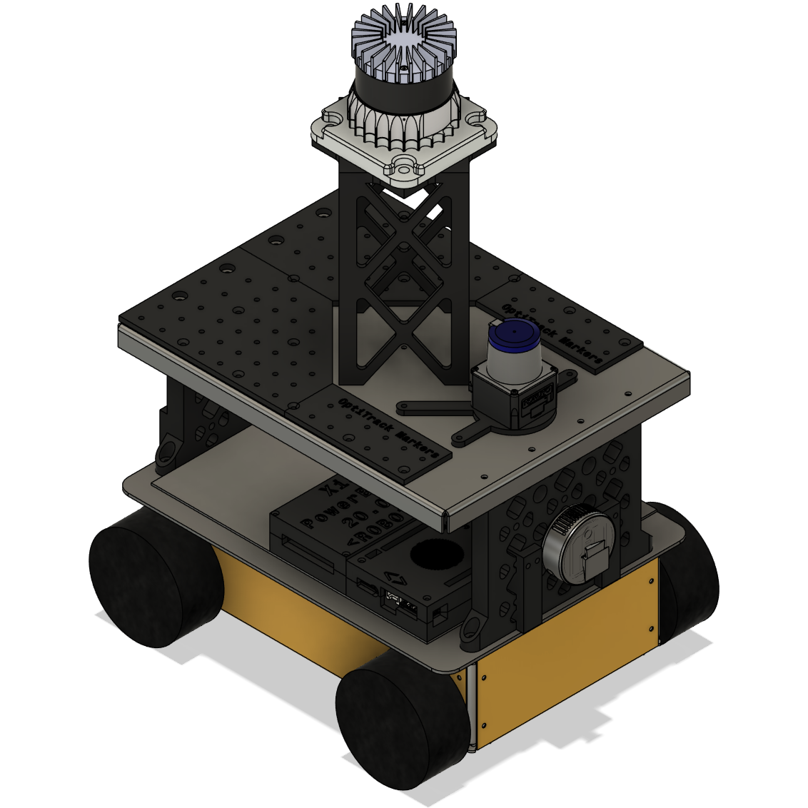

Mobile Robot¶
The IILABS 3D dataset was collected using the INESC TEC MRDT Modified Hangfa Discovery Q2 Platform. This platform was specifically adapted for multi-sensor data collection in indoor environments, with a focus on 3D LiDAR-based SLAM research.

Robot Specifications¶
Base Platform¶
The base platform is a modified Hangfa Discovery Q2, which has been customized by the INESC TEC Mobile Robot Dream Team (MRDT) to accommodate multiple sensors and provide a stable platform for data collection.
Dimensions¶
- Length: 500 mm
- Width: 400 mm
- Height: 600 mm (including sensor mounts)
Locomotion System¶
- Drive Type: Omnidirectional drive (Mecanum wheels)
- Motors: 4 × Faulhaber 2342 DC motors
- Gear Ratio: 64:1
- Wheel Encoders: 12 Counts Per Revolution (CPR)
- Maximum Speed: 0.65 m/s
Power System¶
- Battery: 24V LiPo battery
- Capacity: 10 Ah
- Runtime: Approximately 3 hours of continuous operation
Computing System¶
- Onboard Computer: LattePanda 3 Delta embedded computer
- Processor: Intel N100 (4 cores, 4 threads)
- RAM: 16 GB
- Storage: 512 GB SSD
- Operating System: Ubuntu 20.04 with ROS Noetic
Sensor Configuration¶
The mobile robot is equipped with multiple sensors to provide comprehensive data for SLAM benchmark:
3D LiDARs¶

- Field of View: 360° horizontal, 59° vertical
- Vertical Type: non-repetitive
- Range: 70m
- Rate: 10Hz
- Points per Second: ~200,000

- Field of View: 360° horizontal, 45° vertical
- Vertical Type: rotational uniform
- Range: 120m
- Rate: 10Hz
- Points per Second: ~1,310,720

- Field of View: 360° horizontal, 70° vertical
- Vertical Type: rotational non-uniform
- Range: 150m
- Rate: 10Hz
- Points per Second: ~1,152,000


- Field of View: 360° horizontal, 30° vertical
- Vertical Type: rotational uniform
- Range: 100m
- Rate: 10Hz
- Points per Second: ~288,000
2D LiDAR¶

- Field of View: 270°
- Type: Time of Flight (ToF)
- Range: 10m
- Rate: 40Hz
- Points per Second: ~86,400
Inertial Measurement Unit (IMU)¶

- Attitude Accuracy (Roll): 0.2° (RMS)
- Attitude Accuracy (Pitch): 0.2° (RMS)
- Attitude Accuracy (Yaw): 1° (RMS)
- Rate: 400Hz
Additional Information
For more detailed information about the sensor specifications, please refer to the Sensors section.
Reference Frames¶
The robot uses the following reference frames:
- base_link: The main reference frame, located at the center of the robot wheels
- base_footprint: Located directly below base_link, on the ground plane
- lidar3d: Located at the center of each 3D LiDAR sensor
- laser: Located at the center of the 2D LiDAR sensor
- imu_link: Located at the center of the IMU
Transformations
The transformations between these reference frames are provided both in the tf topic in the rosbag files and in the calibration files included with the dataset. The transformations provided were calculated using the distances specified in the Computer Aided Design (CAD) 3D models.
Robot Namespae
All the reference frames are inside the mobile robot namespace eve. As such, in the rosbags files, the tf reference frames have this namespace as a prefix (e.g., eve/base_link).
Gallery¶
